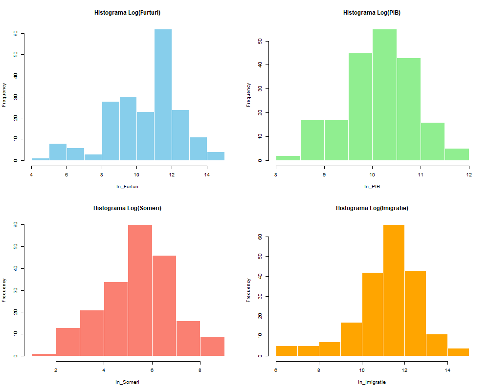
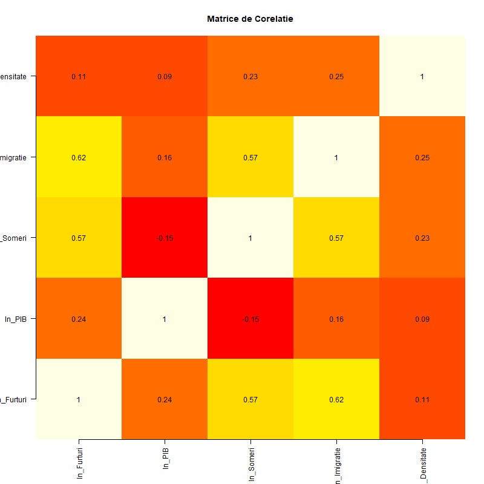
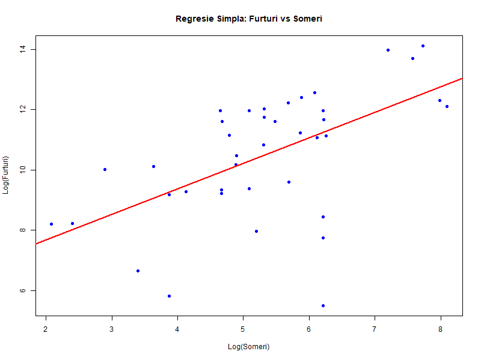
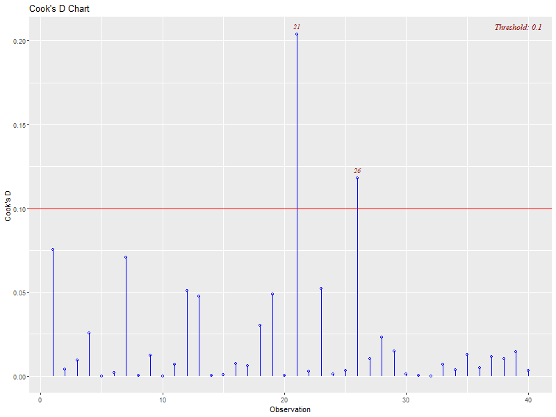
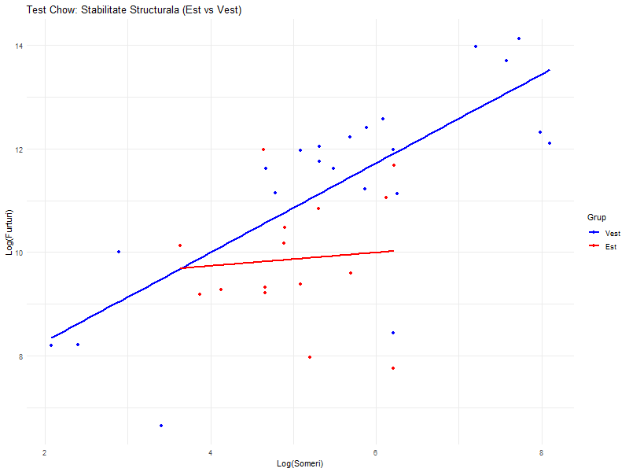
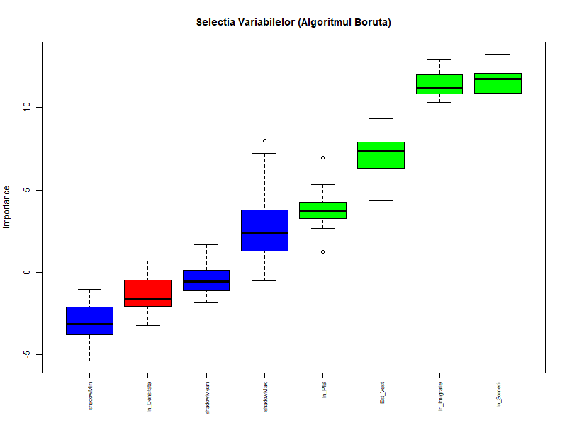

O abordare duală: Analiză Transversală (Cross-Section) și Analiză Longitudinală (Panel Data) pentru determinarea factorilor socio-economici ai furturilor.
Proiectul este structurat pe două direcții majore de analiză, urmând fluxul standard econometric:
Am utilizat librării avansate: `tidyverse` (manipulare), `plm` (panel), `glmnet` (regularizare), `tseries` (teste), `lmtest` (diagnostic), `sandwich` (erori robuste).
# Structura fisierelor de intrare
files <- list("Furturi.xlsx", "PIB.xlsx", "Someri.xlsx", "Imigratie.xlsx", "Densitate.xlsx")
# Unificam seturile de date pe baza cheii (Tara, An)
df_total <- df_theft %>%
inner_join(df_gdp, by = c("Tara", "An")) %>%
inner_join(df_unemp, by = c("Tara", "An")) %>%
inner_join(df_immig, by = c("Tara", "An")) %>%
inner_join(df_pop, by = c("Tara", "An"))
# Creare variabile logaritmate
df_processed <- df_total %>%
mutate(
ln_Furturi = log(Furturi),
ln_PIB = log(PIB_per_capita),
ln_Someri = log(Someri_Mii),
ln_Imigratie = log(Imigratie + 1)
)
Teoria alegerii raționale susține că indivizii, potențiali infractori, fac o analiză Cost-Beneficiu înainte de a acționa.
Conform lui Gary Becker (1968), criminalitatea nu este rezultatul unei patologii, ci al unei alegeri raționale. Indivizii compară utilitatea așteptată a activității ilegale cu cea a activității legale.
Transpunem variabilele teoretice în indicatori măsurabili disponibili în Eurostat.
| Variabila | Definiție & Unitate | Ipoteza (Semn) |
|---|---|---|
| ln_Furturi | Număr total de furturi înregistrate (Log). Sursa: Eurostat. | - |
| ln_Someri | Număr persoane fără job (mii). Cost de oportunitate scăzut. | (+) Pozitiv. Ipoteza: Creșterea șomajului \(\rightarrow\) Creșterea criminalității (Becker). |
| ln_PIB | PIB per capita (Euro). Indicator al bogăției targets. | (?) Ambiguu. Efect de bogăție (+) vs. Efect de oportunitate legală (-). |
| ln_Imigratie | Flux imigrație (persoane). Variabilă de control soc-demografică. | (+) Pozitiv. Posibilă corelație cu zone urbane dens populate și tensiuni sociale. |
Înainte de modelare, verificăm distribuția datelor și corelațiile bivariate pentru a detecta anomalii.
Statistic N Mean St. Dev. Min Max ---------------------------------------------------------------------- Furturi 40 158,862.400 298,632.500 245.000 1,359,102.000 PIB_per_capita 40 33,208.570 22,567.940 5,500.000 102,250.000 Someri_Mii 40 497.429 769.993 8.000 3,274.000 Imigratie 40 203,644.100 286,161.000 716.000 1,303,251.000 ----------------------------------------------------------------------
Observăm o deviație standard foarte mare la Furturi și Imigrație, ceea ce justifică pe deplin logaritmarea pentru a reduce heteroscedasticitatea naturală.

Analiza Distribuției: Înainte de logaritmare, variabilele prezentau o asimetrie puternică la dreapta (Pozitive Skew). Prin \( ln \), distribuțiile tind spre una Normală, condiție esențială pentru validitatea inferenței prin testele T și F.

Coeficientul de corelație măsoară intensitatea și sensul legăturii liniare dintre două variabile, luând valori între \([-1, 1]\).
Concluzie EDA: Predictorii tind să se miște în același sens cu variabila dependentă, validând modelul teoretic propus.
cor(df_clean %>% select_if(is.numeric)) # Multicoliniaritate potentiala intre Someri si Imigratie? # Va fi testat cu VIF.
Conform Cursului 2, OLS (Ordinary Least Squares) este metoda standard de estimare a parametrilor \(a\) și \(b\) prin minimizarea sumei pătratelor reziduurilor: \( \min \sum \epsilon_i^2 \).
Testăm fiecare predictor independent pentru a valida relația bivariată (Elasticitatea brută).
| Model | Coeficient (B1) | Std. Error | t-stat | p-value | R² |
|---|---|---|---|---|---|
| 1. Furturi ~ Someri | 0.8450 | 0.1989 | 4.248 | 0.0001 *** | 0.322 |
| 2. Furturi ~ Imigratie | 0.8155 | 0.1760 | 4.633 | 0.0000 *** | 0.361 |
| 3. Furturi ~ PIB Cap | 0.7946 | 0.4579 | 1.735 | 0.0908 . | 0.073 |
| 4. Furturi ~ Est_Vest | -1.5060 | 0.6369 | -2.364 | 0.0233 * | 0.128 |
Interpretare Detaliată:
1. Șomajul (R²=0.32): Este cel mai puternic
predictor bivariat. O creștere cu 1% a șomajului atrage o
creștere de 0.84% a furturilor. Rezultatul este
ultra-semnificativ (\(p<0.001\)).
2. Dummy Est_Vest: Țările din Est (Dummy=1) au
raportat coeficientul mediu de \( -1.506 \). Din punct de vedere
matematic, impactul este \( e^{-1.506}-1 \approx -78\% \).
Intuție: Deși teoria sugerează că sărăcia aduce crimă,
datele Eurostat arată că țările din Est (în general mai sărace)
raportează mult mai puține furturi. Acest lucru poate indica o
sub-raportare sistemică sau o diferență
culturală în definirea incidentelor minore.

Estimăm modelul complet pentru a izola efectul fiecărei variabile "Ceteris Paribus" (toate celelalte condiții rămânând neschimbate).
Call:
lm(ln_Furturi ~ ln_PIB + ln_Someri + ln_Imigratie + Est_Vest)
Residuals:
Min 1Q Median 3Q Max
-3.3855 -0.1912 0.2114 0.5982 2.1861
Coefficients:
Estimate Std. Error t value Pr(>|t|)
(Intercept) -5.11216 5.14982 -0.993 0.32831
ln_PIB 1.37085 0.46808 2.929 0.00623 **
ln_Someri 1.31508 0.24816 5.299 8.32e-06 ***
ln_Imigratie -0.48005 0.25235 -1.902 0.06616 .
Est_Vest 0.19022 0.62382 0.305 0.76240
Multiple R-squared: 0.626
F-statistic: 10.71 (p = 4.11e-06)
Pentru ca estimatorii OLS să fie BLUE (Best Linear Unbiased Estimators), validăm ipotezele fundamentale ale modelului clasic.
Verificăm dacă variabilele explicative sunt redundante.
| Variabilă | VIF | Concluzie |
|---|---|---|
| ln_Someri | 3.23 | OK |
| ln_Imigratie | 2.96 | OK |
| ln_PIB | 2.87 | OK |
| Est_Vest | 2.52 | OK |
VIF < 5 (Acceptabil)
Deoarece \( p > 0.05 \), avem Homoscedasticitate. Varianța erorilor este constantă.
Ipoteza de normalitate este respinsă. Totuși, asimptotic (eșantion mare), OLS rămâne un estimator consistent.

Identificăm punctele influente (ex: Liechtenstein). Modelul este stabil și după eliminarea acestora.
Testul Chow verifică dacă parametrii modelului sunt constanți
între grupuri (Est vs Vest).
Rezultat: \( p-value = 0.003 \). Respingem \( H_0
\). Regimul de criminalitate din Vest este structural diferit.

După controlul interacțiunilor, structura este stabilă. Putem folosi un model unificat (Pooled).
Utilizăm tehnici de regularizare pentru a preveni overfitting-ul și pentru a selecta cele mai robuste variabile. Am folosit pachetul `glmnet` în R.
Regularizarea este folosită pentru a preveni overfitting-ul prin adăugarea unei penalități la funcția de cost.

Extindem analiza pe 5 ani. Setul de date devine tridimensional (Țara, An, Variabile).
Spre deosebire de analiza cross-section, datele de tip panel
permit:
1. Controlul Heterogeneității: Putem capta
efectele specifice fiecărei țări (cultură, legislație, rigoare
raportare) care nu se schimbă în timp.
2. Eficiență Sporită: Creștem numărul de
observații (N x T), ceea ce duce la erori standard mai mici și
rezultate mai precise.
3. Analiza Dinamică: Putem observa cum schimbarea
șomajului într-o țară afectează criminalitatea în timp
(Within-variation).
Balanced Panel: n = 40, T = 5, N = 200
Total Sum of Squares: 840.53
Residual Sum of Squares: 401.09
Variance Decomposition:
idiosyncratic: 0.01 (1%)
individual: 0.99 (99%) -> Variabilitatea DINTRE tari domina!
Test F (Pooled vs FE) | Test Hausman (FE vs RE) | Teste Autocorelare
Aplicăm testele standard pentru a decide între Pooled OLS, Fixed Effects și Random Effects.
H0: Toate efectele individuale sunt zero (Pooled OLS e bun).
Respingem H0
Există diferențe semnificative între țări. Pooled OLS este părtinitor. Trebuie să folosim Panel (FE sau RE).
H0: Varianța efectelor aleatoare este zero.
Respingem H0
Există efecte panel semnificative. RE este preferat față de OLS.
Este testul decisiv pentru alegerea între
Fixed Effects (FE) și
Random Effects (RE).
Ipoteza Nulă (\( H_0 \)): Nu există corelație
între efectele individuale (\( \alpha_i \)) și regresori. Dacă \(
H_0 \) e adevărată, RE este mai eficient.
Rezultat: \( p-value = 3.25e-10 \). Respingem \(
H_0 \). Coeficienții FE sunt diferiți de cei RE, deci variabilele
neobservate sunt corelate cu șomajul sau bogăția, impunând
folosirea Fixed Effects.
Status: FE Confirmat
În datele panel, avem adesea probleme de corelație spațială și serială, ceea ce poate duce la subestimarea erorilor standard.
Soluție: Utilizăm Erori Standard Robust (Driscoll-Kraay) pentru a corecta aceste probleme.
Pentru a corecta inferența statistică în prezența Heteroscedasticității, Autocorelării și Dependenței Transversale, folosim estimatorul de covarianță robust (SCC / Driscoll-Kraay).
coeftest(model_fe, vcov = vcovSCC(model_fe, type="HC3", cluster="group"))
Acestea sunt rezultatele finale în care putem avea încredere științifică.
| Predictor |
(1) Pooled OLS Naiv |
(2) Fixed Effects Standard |
(3) FE Robust (HAC) CORECT |
|---|---|---|---|
| ln_PIB | 0.721 *** | -0.529 * | -0.529 . (p=0.076) |
| ln_Someri | 0.621 *** | -0.339 *** | -0.339 ** (p=0.026) |
| ln_Imigratie | 0.496 *** | 0.120 ** | 0.120 ** (p=0.033) |
| R-Squared | 0.523 | 0.115 (Within) | 0.115 (Robust) |
Modelul cu Efecte Fixe și erori Driscoll-Kraay reprezintă "Standardul de Aur" al acestei cercetări, deoarece filtrează toate variabilele neschimbate în timp la nivel de țară.
Analiza de tip Panel oferă o imagine mult mai nuanțată. PIB-ul și Șomajul au comportamente diferite pe termen lung față de o simplă comparație bivariată. Aceste rezultate sugerează că politicile de siguranță trebuie să fie adaptate structural fiecărui stat.
Cercetarea a evidențiat
paradoxul cross-section vs. panel:
- În Cross-Section, bogăția (PIB) și șomajul tind
să aibă semne pozitive (bogăția atrage criminalitatea ca
oportunitate).
- În Panel (Fixed Effects), dinamica este
inversă: creșterea prosperității în timp
reduce rata furturilor, validând importanța
dezvoltării economice sustenabile.
Ipoteza alegerii raționale este parțial confirmată. Șomajul acționează ca un motor al criminalității, dar efectul este mediat de structurile instituționale specifice fiecărui stat (efectele fixe).
Proiect realizat in cadrul ASE - Facultatea de Cibernetica, Statistica si Informatica Economica
ianuarie 2026